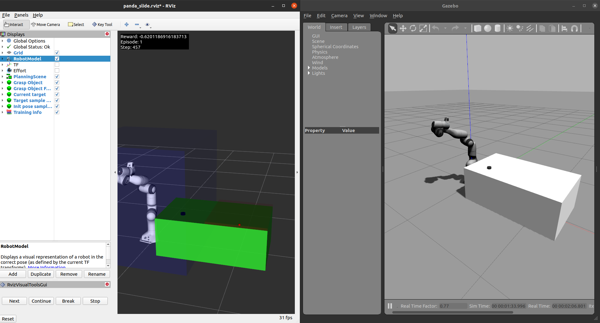

Welcome to panda-gazebo documentation
Welcome to the API documentation for the panda_gazebo package. This package contains all the ROS packages needed for creating a Panda Emika Franka Gazebo simulation. It is used by the ros_gazebo_gym RL framework to create the Panda task environments. It wraps the franka_ros package to add the functionalities needed to train RL agents efficiently.
Package Overview
The panda_gazebo package contains several launch files, ROS nodes and a Gazebo plugin that ease the ros_gazebo_gym interaction with the Panda Gazebo simulation. The launch files can spawn the Panda Robot in several distinct task environments. The ROS nodes generate several ROS services that make controlling or getting information from the robot easier. The Gazebo plugins can lock specific joints of the Panda robot. It also contains a Gazebo world plugin that can be used to lock specific joints of the Panda robot.
Launch files
put_robot_in_world.launch: Spawns the Panda robot in a given task environment.
Start_pick_and_place_world.launch: Loads the pick and place task environment.
Start_push_world.launch: Loads the push task environment.
Start_reach_world.launch: Loads the reach task environment.
Start_slide_world.launch: Loads the slide task environment.
start_simulation.launch: Loads the Panda robot in a given task environment.
For more information about these task environments see the ros_gazebo_gym documentation.
ROS Nodes
- panda_control_server: Creates services related to the panda_control.
get_controlled_joints:Returns the panda joints that are currently controlled when using a given control type.follow_joint_trajectory:Sets the arm joint trajectory and the gripper width.set_joint_commands:Sets an arm command (i.e. position or effort) based on the specified control type.panda_arm/follow_joint_trajectory:Sets the arm joint trajectory.panda_hand/set_gripper_width:Sets the gripper width.panda_arm/set_joint_positions:Sets the arm positions.panda_arm/set_joint_efforts:Sets the arm efforts.
- panda_moveit_server: Creates services to control the robot through MoveIt!.
panda_arm/set_ee_pose:Sets the end-effector pose.get_random_joint_positions: Returns random valid joint positions.get_random_ee_pose: Returns a valid random end-effector pose.planning_scene/add_box: Adds a box to the MoveIt planning sceneplanning_scene/add_plane: Adds a plane to the MoveIt planning scenepanda_arm/get_ee: Returns the currently used end-effector link name.panda_arm/set_ee: Sets the end effector link.panda_arm/get_ee_pose: Returns the current end-effector pose.panda_arm/get_ee_pose_joint_config: Returns a set of possible joint configurations for a given end-effector pose.panda_arm/get_ee_rpy: Returns the current end-effector orientation.set_joint_positions: Sets the arm and Hand joints positions.get_controlled_joints: Gets the joints that MoveIt currently controls.panda_arm/set_joint_positions: Sets the arm joints positions.panda_hand/set_joint_positions: Sets the hand joints position.
Gazebo plugins
- panda_joint_locker: Creates a service to lock/unlock Panda robot’s specific joints.
lock_unlock_panda_joints: Locks/unlocks the specified joints of the Panda robot.
API Documentation
More information about this package’s modules and classes can be found in the Python API documentation. For more information about the message the services require, see the ROS API documentation.
Contents
Getting started
Development
API Documentation